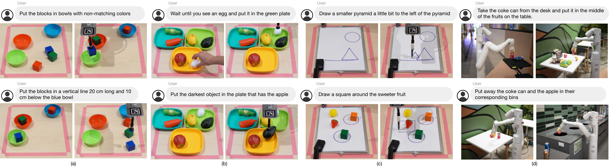

Code as Policies
让语言模型写带计算和控制流的机器人程序，复杂行为可以由简单接口组合出来。
Code as Policies: Language Model Programs for Embodied Control
未见指令与属性的仿真长程任务：CaP 80%，自然语言规划器 64%；空间几何任务为 62%。
01这篇要解决什么？
如果接口只有“抓”和“放”，自然语言列表很难精确表达“把积木均匀排成对角线”。CaP 把程序作为中间表示：模型负责组合规则，Python 和数值库负责准确计算，机器人 API 负责感知与执行。
02先看一个场景
指令是“把三个积木等间距摆在两只碗之间”。这句话里没有一个名词能直接对应某条固定技能：等间距要算插值，两只碗的位置要先看到，摆放还得逐个循环。只给一份技能菜单，模型无从表达这个任务。
03方法怎样运转？

- 01
提示分成 Hints 与 Examples 两块
Hints 是一串 import 语句加命名约定，用来告诉模型手上有哪些 API、返回什么类型，论文建议写成 from utils import 函数名，并用 _np 后缀或 get_bbox_xyxy 这类名字传递类型信息。Examples 是若干“指令写成注释、紧跟一段解法代码”的配对。语言侧用的是现成的 OpenAI Codex code-davinci-002，温度设为 0 走贪心解码，全程不做微调；把新指令连同上一轮的回答继续追加，就能维持一个会话，让后面的指令引用“撤销刚才那一步”。
- 02
三类 API 决定了代码能算什么、能碰什么
第三方库负责计算：NumPy、SciPy、Shapely 已在模型的训练数据里，插值、几何运算不必靠语言推理完成。第一方感知 API 负责取状态，实现上直接调用现成的开放词表检测器——桌面抓放与画图用 MDETR，厨房移动操作用 ViLD，论文明确说这些模型是拿来即用、不做额外训练。第一方控制 API 负责动作，桌面域是一个脚本化的抓取并放置原语，画图域是末端轨迹跟随接口，厨房域是按名字或坐标导航与抓取的接口。
- 03
分层生成：把没定义的函数交给另一个 LMP 补
生成的代码块先被解析成抽象语法树，逐个找出当前作用域里不存在的函数，再调用一个专门做函数生成的 LMP 写出定义并加入作用域，然后对新生成的函数体重复同样的检查，按深度优先一路补下去。这样提示里只需给出逻辑的粗略骨架，不必把实现细节全部写进示例。论文把这种带冗长变量名的分层生成看作函数式版本的思维链。
- 04
先做安全检查，再用 exec 执行
运行前先确认代码里没有 import 语句、没有以双下划线开头的特殊变量、没有 exec 与 eval 调用。通过后交给 Python 的 exec，并传入两个字典作为作用域：globals 装着所有可调用的 API，locals 初始为空、执行过程中接住新变量与新函数；需要返回值时从 locals 里取。循环与终止条件写在生成的代码自己身上，例如“只要还有面积大于 0.2 且在红碗左边的积木就继续移动”，每轮重新调用 parse_obj 查询，直到列表为空。
prompt = Hints(可用 API 的 import 与命名约定) + Examples(注释→代码) + "# " + 指令
code = Codex(prompt, temperature=0) # code-davinci-002，不微调
def run(code, scope):
assert 无 import and 无双下划线变量 and 无 exec/eval # 执行前的安全检查
for name in 未定义调用(ast.parse(code)): # 语法树里找不在作用域的函数
scope[name] = run(函数生成LMP(name), scope) # 深度优先递归补全
exec(code, globals=所有 API, locals=空字典) # locals 接住新变量与新函数
return locals.get("ret_val")
# 循环与终止条件写在生成的代码里，例如：
# names = parse_obj("红碗左边且面积大于 0.2 的积木")
# while names: put_first_on_second(...); names = parse_obj(同一句查询)方法与结果的原文定位见本页引用。
04跟着这个场景走一遍
教学推演：回到上面的场景。第一步，提示的 Hints 写明 import numpy as np 与 from utils import get_pos, put_first_on_second，Examples 给出几组“注释加代码”的样例，把指令作为一行注释追加到末尾，交给温度 0 的 code-davinci-002 续写。第二步，生成的代码先用 get_pos 取两只碗的位置——这个函数背后是现成的 MDETR，返回的是检测框推出的坐标；随后用 NumPy 做插值算出三个目标点；最后逐个调用 put_first_on_second，由脚本化的抓放原语落到硬件上。分工很清楚：模型出结构，数值库出坐标，原语出动作。第三步，如果生成的代码顺手调用了一个没定义的 parse_obj 或 get_objs_bigger_than_area_th，语法树检查会发现它不在作用域里，于是再请一次函数生成 LMP 把定义写出来，并对这个新函数体继续同样的检查。第四步，整段代码通过“无 import、无双下划线、无 exec 与 eval”的检查后交给 exec，globals 里放好上述 API，locals 收下中间变量；如果指令带条件（比如“把所有还在红碗左边的积木往右挪”），终止条件就是生成代码里那个 while 每轮重查后返回空列表。需要注意的是这套流程没有验证物理结果：抓放原语报不报错与积木有没有稳稳落在插值点上是两回事，碰撞和接触误差不在代码的视野里。下一篇 ProgPrompt 补的正是这一层——把场景里有什么、动作的前置条件是什么，直接写进提示。
05实验到底表现怎样？
表 III 的桌面仿真按指令和属性是否见过划分，含 8 类长程任务与 6 类空间几何任务，每项 50 次。另有真实 UR5e 绘图 / 抓放展示，以及代码单元测试基准。
作者报告的实验结果 · v4
| 指标 / 设置 | 比较方法 | CaP / 层次生成 |
|---|---|---|
| 未见指令 + 属性 · 长程成功率 | NL Planner 64% | 80% |
| 未见指令 + 属性 · 几何成功率 | CLIPort 0.01% | 62% |
| RoboCodeGen · Codex davinci 测试通过率 | 平铺生成 81% | 层次生成 95% |
原始证据：方法：§III ↗ · 代码与机器人实验：表 I–III ↗ · 仿真设置：§IV-D ↗
代码的优势在需要精确计算与组合的新指令上比较清晰。RoboCodeGen 的 95% 是程序单元测试通过率；摘要里的 HumanEval 39.8% 同样是编程指标，均不能替代机器人任务成功率。
06收益来自哪里，又停在哪里？
消融与机制证据
表 I 在相同模型内对照平铺和层次化生成，davinci 从 81% 到 95%。这支持函数分解的作用，但不同模型改善幅度不同；小模型未必能可靠管理更复杂的函数层次。
结论的适用边界
高层抓放 API 隐含了大量工程能力，读代码时必须圈出模型生成的部分和人工提供的部分。模型来源这一层是干净的：语言侧是现成的 Codex code-davinci-002，感知侧是现成的 MDETR 与 ViLD，几何计算靠 NumPy、SciPy、Shapely，论文明确说整套系统不需要任何额外的数据收集或模型训练。但“零训练”只成立于模型层，成本被转移到了别处——作者自己写的是每个 LMP 的 Hints 与 Examples、第一方感知与控制 API 的实现、脚本化的抓放原语，以及那套语法树检查加递归函数生成的执行框架；附录专门用一节讨论提示里不能有 bug、命名要一致、类型提示怎么给。相比之下对照组 CLIPort 用 30k 条演示做模仿学习，那是基线的成本，不是 CaP 的成本，两者不可直接换算。示例可运行，也不意味着碰撞、接触与控制误差已解决。
07放回全书的脉络
接着读 ProgPrompt 看“提示怎么描述机器人世界”；再读 CaP-X 看接口抽象、感知噪声和多轮调试怎样改变结果。
08把阅读变成一个小研究
固定模型与任务，把 pick_and_place 分别换成高层抓放、末端位姿 + 夹爪两套接口，观察成功率如何变化。
先自己回答：这项实验怎样才有解释力？
把失败拆成代码错误、几何错误和控制失败。若高层接口大幅提升结果，说明抽象本身贡献了能力；不应把全部收益归因于模型更会推理。
- 用自己的话说出这篇改变了哪个模块。
- 画出它的输入、输出和一次失败如何被处理。
- 复述一个结果，同时说清基线、指标与实验条件。这一问不给答案，材料在第 05 节。
先自己答，再看前两问的参考答案
这篇改了哪个模块改动落在动作的输出形式与中间表示上：高层不再吐一串技能名，而是吐一段可执行的 Python，控制流、算术与几何计算交给解释器和 NumPy、SciPy、Shapely，感知与动作只以被调用的 API 形式出现。世界的表示没有被预先写进提示，场景信息要等程序跑起来才由感知 API 取回。这篇不训练任何权重，不改底层的脚本化抓放原语与现成检测器，也没有给系统加上执行之后的验收环节。
输入、输出与一次失败如何被处理输入是提示里的 Hints（可用 API 的 import 与命名约定）、Examples（注释与解法代码的配对），以及作为一行注释追加进去的新指令；同一会话里上一轮的回答也留在上下文，因此后续指令可以引用前一步；场景状态不进提示，由生成的代码在运行时调用第一方感知 API 取回，背后是现成的 MDETR 或 ViLD。输出是一段 Python 程序，先过执行前的静态检查（不得有 import、双下划线变量、exec 与 eval），再交给 exec 在装着全部 API 的作用域里运行，调用到尚未定义的函数时由另一个 LMP 递归补出定义，真正落到硬件的是程序里调用的脚本化抓放原语或末端轨迹跟随接口。这篇没有执行之后的失败检测与恢复通路：代码里确实可以写反馈循环，但那是每轮重新调用 parse_obj 查询场景来决定还要不要继续，而不是判断上一次抓放有没有做成。原语正常返回与积木有没有稳稳落在插值点是两回事，碰撞与接触误差不在代码的视野里，论文也写明按执行反馈调整增益这一类能力当前并不支持。
让语言模型写带计算和控制流的机器人程序，复杂行为可以由简单接口组合出来。
↗带着位置回到原文
首发日期用于时间排序；以下方法与结果对应 v4。数据为论文作者报告，本讲义没有独立复现实验。
QA就这一页提问或讨论
对某个数字、某条边界或某个推演有疑问，欢迎直接留言：讨论按页面分开，回复会保留在 XinrunXu/awesome-agentic-robotics-papers 的 Discussions 里，需要一个 GitHub 账号。